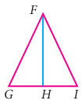
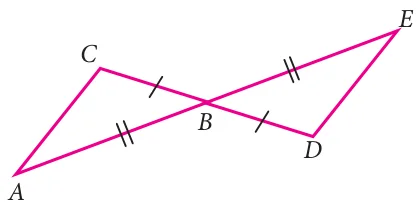
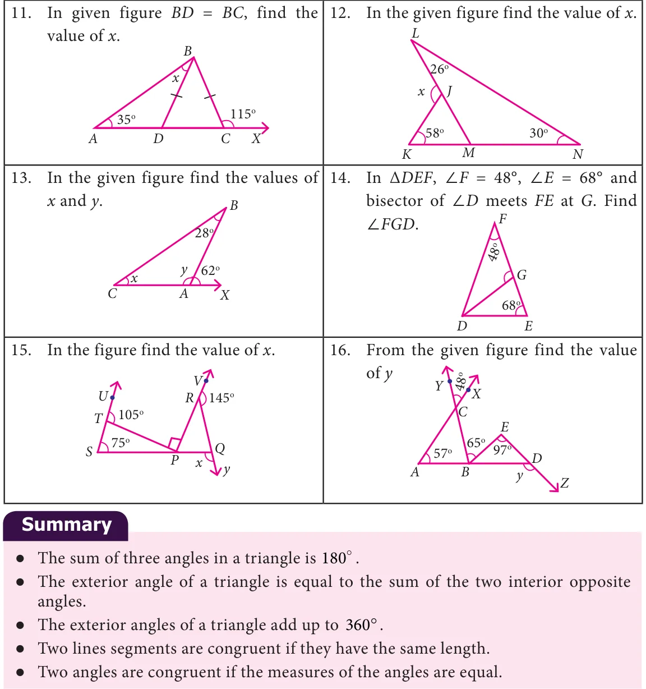

- 9.In the given figure \(FG = FI\) and H is midpoint of GI,

prove that FGH \(\cong\) FHI
- 10.Using the given figure, prove that the triangles are congruent. Can you conclude that
AC is parallel to DE.

Challenge Problems

●● If the corresponding sides and corresponding angles of two plane figures are equal then they are called congruent figures. ●● If three sides of one triangle are equal to the corresponding sides of the other triangle then the two triangles are congruent. This is known as Side - Side - Side criterion. ●● If two sides and the included angle of a triangle are equal to the corresponding two sides and the included angle of another triangle, then the two triangles are congruent to each other. This is known as Side - Angle - Side criterion. ●● If two angles and the included side of one triangle are congruent to the corresponding two angles and the included side of another triangle, then the triangles are congruent This is known Angle-Side-Angle criterion. ●● In right angled triangle, the side which is opposite to right angle is the largest side called Hypotenuse. ●● If the hypotenuse and one side of a right angled triangle is equal to the hypotenuse and one side of another right angled triangle then the two right angled triangles are congruent. This is known as Right Angle-Hypotenuse Side criterion.